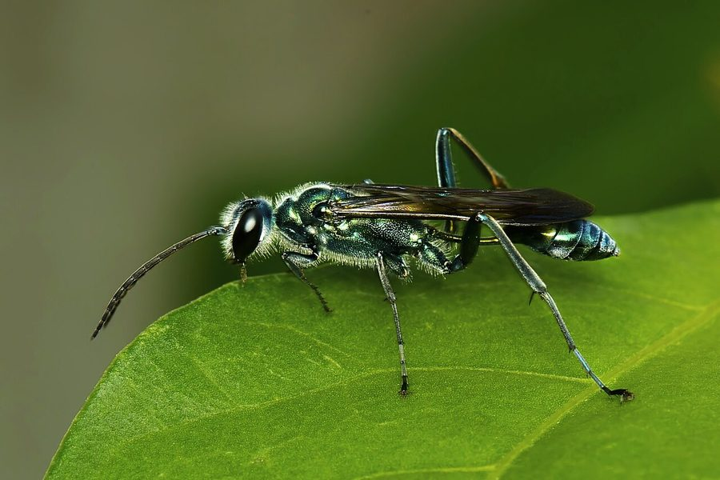

ब्लू मड-डॉबर वास्पBlue Mud-dauber Wasp
Chalybion bengalense · Sphecidae · INS-0246

- Scientific name वैज्ञानिक नाम
- Chalybion bengalense (Dahlbom, 1845)
- Family कुल
- Sphecidae
- Hindi हिंदी
- ब्लू मड-डॉबर वास्प
- Local names स्थानीय नाम
- blue mud-dauber wasp, neeli mitti tataiya, chalybion bengalense, metallic blue mud wasp
- Status here यहाँ की स्थिति
- native
- Movement आवागमन
- Resident, here all year
- Known from कहाँ दर्ज
- Others have published records from the wider Awadh–Purvanchal plain, none yet from Basti–Ayodhya अवध–पूर्वांचल से दूसरों के प्रकाशित अभिलेख, बस्ती–अयोध्या से अभी नहीं
- IUCN IUCN
- not evaluated
- Review समीक्षा
- not yet reviewed
When to look कब देखें
Expected mainly in April, May, June, July, August, September, October, November. मुख्यतः अप्रैल, मई, जून, जुलाई, अगस्त, सितंबर, अक्टूबर, नवंबर में अपेक्षित।
Tell it apart from इनसे अलग पहचानें
ब्लू मड-डॉबर वास्प / Blue Mud-dauber Wasp
Chalybion bengalense (Dahlbom, 1845) — Sphecidae
ब्लू मड-डॉबर वास्प — मकानों की दीवारों और छतों पर दिखने वाली एक चमकदार गहरे नीले रंग की एकांतवासी ततैया। इसकी कमर धागे की तरह बेहद पतली और लंबी होती है। यह मकड़ियों की एक कुशल शिकारी है, जो उन्हें डंक मारकर पंगु बना देती है और अपने घोंसले में भरकर अपने बच्चे के लिए भोजन जुटाती है।
Quick Identification त्वरित पहचान
| Feature | Description |
|---|---|
| Habit | Solitary hunting wasp with brilliant iridescent blue-green metallic luster |
| Waist | Extremely long, thread-like petiole connecting thorax to oval gaster |
| Wings | Deeply smoky violaceous-blue with brilliant purplish reflections |
| Legs | Long, slender, entirely metallic dark blue with spine-bearing tibiae |
| Nesting | Refurbishes abandoned mud cells or natural cavities using fresh water droplets |
Field tip: Look near window frames or porch rafters for a glistening metallic navy-blue wasp with jerking wings carrying paralyzed spiders into an old mud nest.
हिंदी — कैसे पहचानें: चमकदार नीली धातु जैसी चमक, धागे जैसी पतली कमर, और मकड़ियों को पकड़कर मिट्टी के घोंसलों में ले जाना।
Morphology आकारिकी
Adult description: Slender, medium-sized thread-waisted wasp. Head and thorax densely covered with shallow punctures and sparse erect black pilosity. Clypeus slightly produced anteriorly with three small teeth; mandibles acute. Pronotum collar-like, anteriorly sloping; propodeum transversely striate. Petiole extremely elongate, slender, cylindrical, as long as or longer than the thorax. Gaster small, oval, pointed apically, smooth and shining. Entire body showing rich metallic sapphire-blue to peacock-green iridescence. Wings fuliginous with rich violet reflection.
हिंदी: यह एक चमकीली गहरे नीले रंग की ततैया है जिसकी कमर बहुत पतली होती है।
Behaviour & Ecology व्यवहार और पारिस्थितिकी
- Hunting Strategy: Stalks spiders in foliage, webs, and porch corners; delivers a precise venomous sting to the cephalothorax that paralyzes but does not kill the prey.
- Secondary Nest Utilization: Unlike Sceliphron, females rarely construct fresh mud cells from scratch; instead, they clean and refurbish abandoned potter wasp mud pots.
- Sleeping Aggregations: During cool evenings or overcast days, dozens of males and females often congregate to roost together on suspended roots or dry grass stems.
- Flight and Posture: Characterized by rapid twitching of the wings and bobbing of the abdomen while walking over masonry walls.
हिंदी: यह ततैया मकड़ियों को डंक मारकर जिंदा बेहोश कर देती है। यह अक्सर पुरानी मिट्टी के घोंसलों को साफ करके इस्तेमाल करती है।
Life Cycle / Phenology जीवन चक्र
- Nest Provisioning: The female stocks each refurbished mud cell with multiple paralyzed spiders until the chamber is tightly packed.
- Oviposition: A single elongate white egg is laid on the abdomen of the first or last spider loaded into the cell.
- Cell Closure: The entrance is sealed with a smooth plug of moist mud fetched from nearby muddy margins.
- Emergence: The larva consumes the living spider larder, spins a tough brown parchment cocoon, and emerges as an adult the following season.
हिंदी: मिट्टी के कक्ष में मकड़ियों को भरकर उन पर एक अंडा दिया जाता है। लार्वा मकड़ियों को खाकर बड़ा होता है।
Host Plants or Prey आहार
- Specialized Prey: Diverse spiders, especially orb-weavers (Araneidae), jumping spiders (Salticidae), and crab spiders (Thomisidae).
- Adult Sustenance: Nectar from flowering weeds, citrus blossoms, and extrafloral nectaries of peepal and neem.
- Water Source: Sips water from leaking taps, canal edges, and puddles to moisten mud when sealing nests.
हिंदी: इसका मुख्य शिकार मकड़ियां हैं। वयस्क ततैया फूलों का रस और पेड़ों से रिसने वाला मीठा तरल पीती है।
Predators / Natural Enemies शत्रु
- Avian Predators: Aerial flycatchers, black drongos, and wall-creeping birds intercept flying wasps.
- Lizards: Indian garden lizards wait near wall crevices to snatch provisioning females.
- Cleptoparasites: Cuckoo wasps (Chrysididae) slip into open mud cells while the mother is away hunting to lay their own eggs.
हिंदी: भुजंगा और छिपकलियां इन्हें पकड़ लेती हैं। सुनहरी मक्खियां (कुक्कू वास्प) इनके घोंसलों में चोरी से अंडे दे देती हैं।
Agricultural / Human Relevance कृषि प्रासंगिकता
- Natural Spider Population Regulation: Keeps domestic and garden spider numbers balanced around dwellings and farmsteads.
- Docile Demeanour: Solitary and peaceful; never attacks people unless held tightly in the hand or trapped inside clothing.
- Household Guest: Common harmless companion under rural tiled roofs and verandahs across Awadh.
हिंदी: यह घरों और बागीचों में मकड़ियों की संख्या नियंत्रित रखती है। यह इंसानों को कभी परेशान नहीं करती और बिल्कुल शांत स्वभाव की होती है।
Expected Locally स्थानीय रूप से अपेक्षित
Not a field record. Written from published accounts for eastern Uttar Pradesh. No confirmed local sighting yet — if you have seen it, that is what the atlas needs.
अभी तक स्थानीय पुष्टि नहीं। यह विवरण प्रकाशित स्रोतों से है, किसी अवलोकन से नहीं।
Expected across rural settlements, agricultural groves, gardens, and scrublands of Basti, Ayodhya, and neighbouring Awadh districts. GBIF holds published records from the wider Awadh–Purvanchal plain, none yet from Basti–Ayodhya. To confirm this species for the Atlas, provide a clear photograph showing key field characters, along with date, time, and specific location.
Distribution वितरण
Global range: Widespread across the Indo-Malayan realm, extending from India, Sri Lanka, and Myanmar through Southeast Asia to southern Europe as an adventive.
In India: Distributed across the entire Indian mainland from the lower Himalayas to the southern peninsula.
In Uttar Pradesh: Widely recorded across the Gangetic plain from Varanasi, Lucknow, and Kanpur.
In Basti district / eastern UP: Expected around traditional mud-and-brick homes, old cattle sheds, and orchards throughout Basti and Ayodhya.
हिंदी: यह ततैया भारत और दक्षिण-पूर्व एशिया में बहुत आम है। उत्तर प्रदेश के पुराने मकानों और बागीचों में यह आसानी से पाई जाती है।
Research Questions शोध प्रश्न
- Which spider families form the dominant prey of Chalybion bengalense in eastern Uttar Pradesh villages? / पूर्वी उत्तर प्रदेश के गांवों में यह ततैया मुख्य रूप से किस प्रजाति की मकड़ियों का शिकार करती है?
- What proportion of nesting cells are re-used potter wasp nests compared to fresh cavities? / यह कितने प्रतिशत पुरानी मिट्टी के घोंसले दोबारा इस्तेमाल करती है?
- What triggers the nocturnal sleeping aggregations of this solitary wasp species? / रात के समय कई ततैयों के एक साथ एक ही तिनके पर सोने का क्या कारण है?
- How effective are its nesting seals in keeping out chrysidid cuckoo wasp parasitoids? / मिट्टी का ढक्कन परजीवी सुनहरी मक्खियों को रोकने में कितना सफल रहता है?
- Does the abundance of domestic orb-weavers around thatched roofs influence local wasp density? / क्या घरों के आसपास मकड़ियों की अधिक संख्या से इस ततैया की संख्या बढ़ती है?
Similar Species मिलती-जुलती प्रजातियाँ
| Species | How to tell apart | हिंदी |
|---|---|---|
| Sceliphron madraspatanum | Black and bright yellow with banded legs; builds its own multi-celled mud nests | काला और पीला शरीर, खुद मिट्टी का नया घोंसला बनाती है |
| Sphex argentatus | Larger, robust black body with silvery facial pubesence; ground nester | भारी काला शरीर, चेहरे पर चांदी जैसे बाल, जमीन में बिल |
| Chalybion violaceum | Darker indigo coloration; subtle propodeal sculpture differences | अधिक गहरा जामुनी रंग और सीने की बनावट में अंतर |
Field rule: A glistening metallic sapphire-blue wasp with a remarkably thin thread-like petiole stocking spiders into mud nests identifies Chalybion bengalense.
Taxonomy & Classification वर्गीकरण
Original description. Described by Anders Gustaf Dahlbom in 1845 as Chalybion bengalense (initially placed in the genus Sphex) in Hymenoptera Europaea praecipue borealia, Tomus 1, Sphex.
Subspecies. Monotypic across India; some island populations have been discussed as geographic forms.
Family and order placement. Placed in the family Sphecidae (thread-waisted hunting wasps), subfamily Sceliphrinae, in the order Hymenoptera.
IUCN status rationale. Not evaluated by the IUCN; ubiquitous across anthropogenic and natural environments in South Asia.
हिंदी: गुस्ताफ डाहलबॉम ने 1845 में इसका विवरण दिया था। यह स्फेसिडी कुल की एकांतवासी शिकारी ततैया है।
Photo Gallery फोटो गैलरी
No photos yet — add field photos to media/species/blue_mud_dauber_wasp/ and run node scripts/sync_photos.js.
Photos needed आवश्यक फोटो
- [ ] Metallic blue adult carrying a spider toward a mud nest (मकड़ी को घोंसले की तरफ ले जाती ततैया)
- [ ] Close-up on masonry showing thread-like petiole (धागे जैसी पतली कमर का दीवार पर क्लोज-अप)
- [ ] Evening cluster of sleeping individuals on a dry root (सूखी जड़ पर एक साथ सोती ततैयों का समूह)
References संदर्भ
- Dahlbom, A.G. (1845). Hymenoptera Europaea praecipue borealia, Tomus 1, Sphex. Lundbergiana, Lund.
- Bingham, C.T. (1897). The Fauna of British India, including Ceylon and Burma: Hymenoptera, Vol. I. Wasps and Bees, p. 226. Taylor and Francis, London.
- Pham, P.H. (2019). The nesting habits of Chalybion bengalense (Dahlbom) (Hymenoptera: Sphecidae). Oriental Insects, 54(3), pp. 308–318. doi:10.1080/00305316.2019.1624220
- Bohart, R.M. & Menke, A.S. (1976). Sphecid Wasps of the World: A Generic Revision, University of California Press, Berkeley.
- Hensen, R.V. (1988). Revision of the nominate subgenus Chalybion Dahlbom (Hymenoptera, Sphecidae). Tijdschrift voor Entomologie, 131, pp. 13–64.
- GBIF Occurrence Data — Chalybion bengalense (Dahlbom, 1845), India (2025).
Source file: species/fauna/insects/blue_mud_dauber_wasp.md